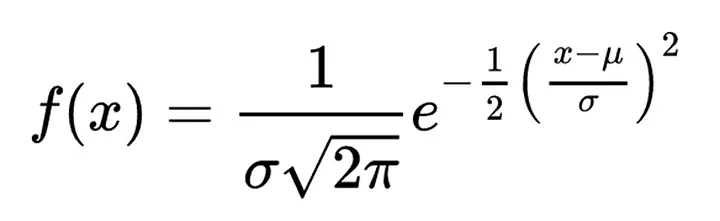

Memahami Data#
“Dari Wikipedia bahasa Indonesia, ensiklopedia bebas Bunga iris (Neomarica longifolia; sinonim: Trimezia longifolia)[1] adalah terna (herb) yang berkembang biak dengan menggunakan rhizome (rimpang) dan termasuk ke dalam keluarga Iridaceae.” (Kontributor dari proyek Wikimedia., 2021)
Bunga iris dapat diperjualbelikan secara bebas dan dapat digunakan sebagai tanaman hias. Warna dan bentuknya menarik dan dapat ditanam dalam pot maupun di tanam langsung di tanah halaman rumah. Selain menjadi tanaman hias, tanaman ini dapat dimanfaatkan juga sebagai tanaman obat. Tanaman ini bisa digunakan untuk mengobati hepatitis, mual, sembelit, rematik, dan gusi bengkak.
Pada pekerjaan ini kami akan mendeskripsikan data iris#
Deskripsi fitur
Amati missing value
Inputasi missing value dengan metode KNN dan Mean lalu dibandingkan
Hitung akurasi dan perbandingan tiap metode
Inisialisasi#
import pandas as pd
import seaborn as sns
import numpy as np
---------------------------------------------------------------------------
ModuleNotFoundError Traceback (most recent call last)
Cell In[1], line 1
----> 1 import pandas as pd
2 import seaborn as sns
3 import numpy as np
ModuleNotFoundError: No module named 'pandas'
Menampilkan Data#
Ambil data sepal iris dari MySQL#
df_sepal = _deepnote_execute_sql('SELECT * FROM iris', 'SQL_86FFEF30_2CE7_45FB_B840_F36435E1CC93', audit_sql_comment='', sql_cache_mode='cache_disabled')
df_sepal
| Id | SepalLengthCm | SepalWidthCm | Species | |
|---|---|---|---|---|
| 0 | 1 | 5.1 | 3.5 | Iris-setosa |
| 1 | 2 | 4.9 | 3.0 | Iris-setosa |
| 2 | 3 | 4.7 | 3.2 | Iris-setosa |
| 3 | 4 | 4.6 | 3.1 | Iris-setosa |
| 4 | 5 | 5.0 | 3.6 | Iris-setosa |
| ... | ... | ... | ... | ... |
| 145 | 146 | 6.7 | 3.0 | Iris-virginica |
| 146 | 147 | 6.3 | 2.5 | Iris-virginica |
| 147 | 148 | 6.5 | 3.0 | Iris-virginica |
| 148 | 149 | 6.2 | 3.4 | Iris-virginica |
| 149 | 150 | 5.9 | 3.0 | Iris-virginica |
150 rows × 4 columns
Ambil data petal iris dari PostgreSQL#
df_petal = _deepnote_execute_sql('SELECT * FROM iris', 'SQL_843DF3DB_71CE_4E04_AB63_48BA92D27513', audit_sql_comment='', sql_cache_mode='cache_disabled')
df_petal
| Id | PetalLengthCm | PetalWidthCm | Species | |
|---|---|---|---|---|
| 0 | 1 | 1.4 | 0.2 | Iris-setosa |
| 1 | 2 | 1.4 | 0.2 | Iris-setosa |
| 2 | 3 | 1.3 | 0.2 | Iris-setosa |
| 3 | 4 | 1.5 | 0.2 | Iris-setosa |
| 4 | 5 | 1.4 | 0.2 | Iris-setosa |
| ... | ... | ... | ... | ... |
| 145 | 146 | 5.2 | 2.3 | Iris-virginica |
| 146 | 147 | 5.0 | 1.9 | Iris-virginica |
| 147 | 148 | 5.2 | 2.0 | Iris-virginica |
| 148 | 149 | 5.4 | 2.3 | Iris-virginica |
| 149 | 150 | 5.1 | 1.8 | Iris-virginica |
150 rows × 4 columns
Penggabungan data dari dua sumber yang berbeda#
# concat two dataframe
df = pd.concat([df_sepal.drop(['Species'], axis=1), df_petal.drop(['Id'], axis=1)], axis=1, join='inner')
df
| Id | SepalLengthCm | SepalWidthCm | PetalLengthCm | PetalWidthCm | Species | |
|---|---|---|---|---|---|---|
| 0 | 1 | 5.1 | 3.5 | 1.4 | 0.2 | Iris-setosa |
| 1 | 2 | 4.9 | 3.0 | 1.4 | 0.2 | Iris-setosa |
| 2 | 3 | 4.7 | 3.2 | 1.3 | 0.2 | Iris-setosa |
| 3 | 4 | 4.6 | 3.1 | 1.5 | 0.2 | Iris-setosa |
| 4 | 5 | 5.0 | 3.6 | 1.4 | 0.2 | Iris-setosa |
| ... | ... | ... | ... | ... | ... | ... |
| 145 | 146 | 6.7 | 3.0 | 5.2 | 2.3 | Iris-virginica |
| 146 | 147 | 6.3 | 2.5 | 5.0 | 1.9 | Iris-virginica |
| 147 | 148 | 6.5 | 3.0 | 5.2 | 2.0 | Iris-virginica |
| 148 | 149 | 6.2 | 3.4 | 5.4 | 2.3 | Iris-virginica |
| 149 | 150 | 5.9 | 3.0 | 5.1 | 1.8 | Iris-virginica |
150 rows × 6 columns
Deskripsi Data#
Penjelasan fitur#
df.info()
<class 'pandas.core.frame.DataFrame'>
RangeIndex: 150 entries, 0 to 149
Data columns (total 6 columns):
# Column Non-Null Count Dtype
--- ------ -------------- -----
0 Id 150 non-null int64
1 SepalLengthCm 150 non-null float64
2 SepalWidthCm 150 non-null float64
3 PetalLengthCm 150 non-null float64
4 PetalWidthCm 150 non-null float64
5 Species 150 non-null object
dtypes: float64(4), int64(1), object(1)
memory usage: 7.2+ KB
Berdasarkan output dari kode program diatas. kita dapat mengetahui keterangan mengenai Tipe Data dari masing masing fitur. terdapat empat fitur dan satu class. dijelaskan sebagai berikut :
SepalLengthCm merupakan fitur dengan tipe data numerik yang merupakan hasil dari pengukuran panjang kelopak sepal dari bunga iris.
SepalWidhtCM merupakan fitur dengan tipe data numerik yang merupakan hasil dari pengukuran lebar kelopak sepal dari dari bunga iris.
PetalLengthCm merupakan fitur dengan tipe data numerik yang merupakan hasil dari pengukuran panjang kelopak petal dari bunga iris.
PetalWidthCm merupakan fitur dengan tipe data numerik yang merupakan hasil pengukuran dari lebar kelopak sepal dari bunga iris.
Species merupakan class dengan tipe data kategori yang merupakan klasifikasi jenis bungan iris.
Penjelasan class#
df.value_counts('Species')
Species
Iris-setosa 50
Iris-versicolor 50
Iris-virginica 50
Name: count, dtype: int64
Dari kode program diatas. dapat diketahui bahwa terdapat tiga jenis bunga iris berdasarkan data yang sudah kita analisa.
Percobaan Missing Value#
Pada tahapan ini akan melakukan sebuah bercobaan dengan menghapus lima value dari beberapa baris. sehingga secara tidak langsung kita melakukan sebuah simulasi menghadapi sebuah data yang memiliki missing value.
Menghapus value dari baris#
df.loc[df["Id"] == 50, 'SepalLengthCm'] = None
df.loc[df["Id"] == 100, 'SepalLengthCm'] = None
df.loc[df["Id"] == 150, 'SepalLengthCm'] = None
# dua fitur pada
df.loc[df["Id"] == 25, ['SepalLengthCm','PetalWidthCm']] = None
df.loc[df["Id"] == 75, ['SepalLengthCm','PetalWidthCm']] = None
df
| Id | SepalLengthCm | SepalWidthCm | PetalLengthCm | PetalWidthCm | Species | |
|---|---|---|---|---|---|---|
| 0 | 1 | 5.1 | 3.5 | 1.4 | 0.2 | Iris-setosa |
| 1 | 2 | 4.9 | 3.0 | 1.4 | 0.2 | Iris-setosa |
| 2 | 3 | 4.7 | 3.2 | 1.3 | 0.2 | Iris-setosa |
| 3 | 4 | 4.6 | 3.1 | 1.5 | 0.2 | Iris-setosa |
| 4 | 5 | 5.0 | 3.6 | 1.4 | 0.2 | Iris-setosa |
| ... | ... | ... | ... | ... | ... | ... |
| 145 | 146 | 6.7 | 3.0 | 5.2 | 2.3 | Iris-virginica |
| 146 | 147 | 6.3 | 2.5 | 5.0 | 1.9 | Iris-virginica |
| 147 | 148 | 6.5 | 3.0 | 5.2 | 2.0 | Iris-virginica |
| 148 | 149 | 6.2 | 3.4 | 5.4 | 2.3 | Iris-virginica |
| 149 | 150 | NaN | 3.0 | 5.1 | 1.8 | Iris-virginica |
150 rows × 6 columns
Menampilkan fitur yang memiliki missing value#
df.isnull().sum()
Id 0
SepalLengthCm 5
SepalWidthCm 0
PetalLengthCm 0
PetalWidthCm 2
Species 0
dtype: int64
Dari kode diatas dapat dilihat bahwa terdapat missng value pada fitur SepalLengthCm dan PetalWidthCm. pada fitur SepalLengthCm terdapat lima baris yang memiliki missing value. dan pada fitur PetalWidthCm terdapat dua baris yang memiliki missing value
Pra-pemrosesan Data (Data Preprocessing)#
Data preprocessing dalam data mining sangat penting. Pada tahapan ini, akan dilakukan pengolahan data mentah (Raw data) yang nantinya akan diubah menjadi data yang bisa diolah untuk di analisa lebih lanjut.
Ada 4 tahapan untuk melakukan pra-pemrosesan data, yaitu :
Pembersihan Data (Data Cleaning)
Pada tahapan ini. Data mentah (Raw Data) yang diperoleh harus dilakukan seleksi dengan menghapus data yang tidak relevan, lengkap, dan tidak akurat. Hal ini berguna untuk mengurangi kesalahpahaman data.
Penggabungan Data (Data Integration)
Data dari sumber yang berbeda digabungkan menjadi satu dataset. karena itu, kita harus mengecek sumber-sumber data agar supaya memiliki format yang sama.
Tranformasi Data (Data Tranformation)
Setelah proses penggabungan data dari berbagai sumber data. Selanjutnya akan dilakukan proses tranformasi data. Hal ini dilakukan karena kemungkinan data yang diambil memiliki perbedaan format. karena itu agar memudahkan ketika diolah, Data harus disamakan formatnya.
Pengurangan Data (Data Reduction)
Terakhir yang dilakukan adalah mengurangi data. Maksudnya adalah mengurangi sampel data yang diambil. walupun dilakukan pengurangan sampel data, pengurangan ini tidak boleh mengubah hasil analisa data. Ada tiga cara yang dilakukan. Pertama, Mengurangi dimensi. Kedua, pengurangan jumlah data. Dan ketiga, kompresi data.
Pembersihan Data (Data Cleaning)#
Seleksi fitur#
Seleksi fitur dilakukan untuk menghapus kolom / fitur yang tidak dibutuhkan. dalam kasus ini, kolom Id dihapus karena tidak dibutuhkan dalam komputasi.
df = df.drop(['Id'], axis=1)
df
| SepalLengthCm | SepalWidthCm | PetalLengthCm | PetalWidthCm | Species | |
|---|---|---|---|---|---|
| 0 | 5.1 | 3.5 | 1.4 | 0.2 | Iris-setosa |
| 1 | 4.9 | 3.0 | 1.4 | 0.2 | Iris-setosa |
| 2 | 4.7 | 3.2 | 1.3 | 0.2 | Iris-setosa |
| 3 | 4.6 | 3.1 | 1.5 | 0.2 | Iris-setosa |
| 4 | 5.0 | 3.6 | 1.4 | 0.2 | Iris-setosa |
| ... | ... | ... | ... | ... | ... |
| 145 | 6.7 | 3.0 | 5.2 | 2.3 | Iris-virginica |
| 146 | 6.3 | 2.5 | 5.0 | 1.9 | Iris-virginica |
| 147 | 6.5 | 3.0 | 5.2 | 2.0 | Iris-virginica |
| 148 | 6.2 | 3.4 | 5.4 | 2.3 | Iris-virginica |
| 149 | NaN | 3.0 | 5.1 | 1.8 | Iris-virginica |
150 rows × 5 columns
Merubah nama kolom#
Dataset biasanya memiliki nama kolom / fitur yang kurang manusiawi sehingga diperlukan peruahan nama agar memudahkan proses analisis.
df = df.rename(columns={'SepalLengthCm' : 'Sepal Length', 'SepalWidthCm' : 'Sepal Width', 'PetalLengthCm' : 'Petal Length', 'PetalWidthCm' : 'Petal Width'})
df.head(5)
| Sepal Length | Sepal Width | Petal Length | Petal Width | Species | |
|---|---|---|---|---|---|
| 0 | 5.1 | 3.5 | 1.4 | 0.2 | Iris-setosa |
| 1 | 4.9 | 3.0 | 1.4 | 0.2 | Iris-setosa |
| 2 | 4.7 | 3.2 | 1.3 | 0.2 | Iris-setosa |
| 3 | 4.6 | 3.1 | 1.5 | 0.2 | Iris-setosa |
| 4 | 5.0 | 3.6 | 1.4 | 0.2 | Iris-setosa |
Menghapus baris duplikat#
Dataset yang baik adalah dataset yang memiliki jumlah data yang banyak dan beragam. Banyaknya data yang sama tidak akan membuat model memilki akurasi yang tinggi.
# cek jumlah baris dan kolom
df.shape
(150, 5)
# cek jumlah baris dan kolom yang memiliki data duplikat
duplicate_rows_df = df[df.duplicated()]
print('number of duplicate rows : ', duplicate_rows_df.shape)
number of duplicate rows : (3, 5)
Dari kode program diatas, dapat diketahui bahwa terdapat tiga baris yang memilki data yang sama
# menghapus duplikasi data
df = df.drop_duplicates()
print('number of rows after drop duplicated rows', df.shape)
number of rows after drop duplicated rows (147, 5)
Berdasarkan output kode proram diatas, jumlah baris yang awalnya 150 baris menjadi 147 baris. hal ini membuktikan bahwa kita sudah berhasil menghapus baris yang memiliki data yang sama.
Penanganan missing value#
Data yang hilang atau kosong harus ditangani dengan serius. Hal ini akan merusak dan menganggu pemodelan dataset.Data yang hilang atau kosong berasal dari sumber data yang tidak bekerja secara benar. bisa saja dari mesin yang awalnya bekerja secara baik namun diproses pengerjaan mengalamai error. Ataupun bila data yang didapatkan dari manusisa, bisa saja data yang hilang disebabkan oleh human error atau privatisasi data.
Dalam menangani missing value ada beberapa cara. umumnya bisa dengan dihapus ataupun di isi dengan metode metode tertentu. dalam kasus ini, kita akan mencoba melakukan hapus data dan mengisi data dengan metode menghitung rata-rata (mean) dan metode K Nearest Neightbour (KNN).
Penanganan missing value dengan menghapus baris
# menampilkan baris dengan missing value
df.loc[df['Sepal Length'].isnull() | df['Sepal Width'].isnull() | df['Petal Length'].isnull() | df['Petal Width'].isnull()]
| Sepal Length | Sepal Width | Petal Length | Petal Width | Species | |
|---|---|---|---|---|---|
| 24 | NaN | 3.4 | 1.9 | NaN | Iris-setosa |
| 49 | NaN | 3.3 | 1.4 | 0.2 | Iris-setosa |
| 74 | NaN | 2.9 | 4.3 | NaN | Iris-versicolor |
| 99 | NaN | 2.8 | 4.1 | 1.3 | Iris-versicolor |
| 149 | NaN | 3.0 | 5.1 | 1.8 | Iris-virginica |
Dalam kasus ini terdapat lima baris data yang memiliki missing value. pada baris 24 dan 74. terdapat dua kolom yang memiliki missing value. baris ini kita hapus karena kita kehilangan 2 data fitur dari 4 fitur. atau dapat dibilang kita kehilangan 50% informasi fitur pada fitur.
# menghapus baris baris dengan missing value pada kolom 'Petal Width'
df.dropna(subset=['Petal Width'], inplace=True)
df
| Sepal Length | Sepal Width | Petal Length | Petal Width | Species | |
|---|---|---|---|---|---|
| 0 | 5.1 | 3.5 | 1.4 | 0.2 | Iris-setosa |
| 1 | 4.9 | 3.0 | 1.4 | 0.2 | Iris-setosa |
| 2 | 4.7 | 3.2 | 1.3 | 0.2 | Iris-setosa |
| 3 | 4.6 | 3.1 | 1.5 | 0.2 | Iris-setosa |
| 4 | 5.0 | 3.6 | 1.4 | 0.2 | Iris-setosa |
| ... | ... | ... | ... | ... | ... |
| 145 | 6.7 | 3.0 | 5.2 | 2.3 | Iris-virginica |
| 146 | 6.3 | 2.5 | 5.0 | 1.9 | Iris-virginica |
| 147 | 6.5 | 3.0 | 5.2 | 2.0 | Iris-virginica |
| 148 | 6.2 | 3.4 | 5.4 | 2.3 | Iris-virginica |
| 149 | NaN | 3.0 | 5.1 | 1.8 | Iris-virginica |
145 rows × 5 columns
Pada kode diatas, kita sudah berhasil menghapus baris 24 dan 74. selanjutnya kita akan melakukan imputasi data pada baris 99 dan 149. kali ini kita kan melkukannya dengan menggunakan dua metode, yaitu metode mean atau rata-rata dan metode KNN. lalu pada proses berikutnya akan dilakukan perbandingan akurasi dari kedua metode tersebut.
Penanganan missing value dengan metode nilai rata-rata (Mean)
Pada langkah sebelumnya kit sudah berhasil menghapus baris, pada langkah kali ini akan dilakukan imputasi missing value dengan metode nilai rata-rata (Mean). yaitu dengan menjumlahkan seluruh baris nilai fitur dan dilakukan operasi pembagian dengan jumlah baris. maka akan ditemukan hasil rata-rata nilai fitur. adapun rumusnya sebagai berikut.
$ \bar{x} = \sum_{i = 1}^{n} \frac{x_{i}}{n} $
# membuat copy dataframe pada variabel lain
df_mean = df.copy(deep=True)
# mencari nilai mean
mean = round(df_mean['Sepal Length'].mean(), 1)
print('nilai mean adalah = ', mean)
# imputasi missing value dengan mean
df_mean['Sepal Length'].fillna(mean, inplace=True)
df_mean
nilai mean adalah = 5.9
| Sepal Length | Sepal Width | Petal Length | Petal Width | Species | |
|---|---|---|---|---|---|
| 0 | 5.1 | 3.5 | 1.4 | 0.2 | Iris-setosa |
| 1 | 4.9 | 3.0 | 1.4 | 0.2 | Iris-setosa |
| 2 | 4.7 | 3.2 | 1.3 | 0.2 | Iris-setosa |
| 3 | 4.6 | 3.1 | 1.5 | 0.2 | Iris-setosa |
| 4 | 5.0 | 3.6 | 1.4 | 0.2 | Iris-setosa |
| ... | ... | ... | ... | ... | ... |
| 145 | 6.7 | 3.0 | 5.2 | 2.3 | Iris-virginica |
| 146 | 6.3 | 2.5 | 5.0 | 1.9 | Iris-virginica |
| 147 | 6.5 | 3.0 | 5.2 | 2.0 | Iris-virginica |
| 148 | 6.2 | 3.4 | 5.4 | 2.3 | Iris-virginica |
| 149 | 5.9 | 3.0 | 5.1 | 1.8 | Iris-virginica |
145 rows × 5 columns
Berdasarkan kode program diatas. kita membuat duplikasi dataframe yang nantinya untuk menyipan dataframe yang menggunakan metode mean. kemudian mencari nilai mean dan timpa atau gantikan baris yang memiliki missing value dengan nilai mean.
Penanganan missing value dengan metode K Nearest Neightbour (KNN)
Nearest Neightbour jika di translasikan menjad bahasa indonesia adalah tetangga terdekat. Dan K yang dimaksud adalah jumlah tetangga tedekat. Jadi dapat di definisikan bahwa K Nearest Neightbour (KNN) merupakan metode dengan mencari jumlah tetangga terdekat dan akan dilakukan perbandingan class untuk memprediksi klasifikasi data baru. Adapun cara kerjanya bisa disimak dibawah ini.
Cara kerja K Nearest Neightbour (KNN)
Look at the data (Melihat pada data)
Berdasarkan pada gambar diata. node atau tiitk berwarna abu-abu merupakan data baru. data ini akan nantinya akan diklasifikasikan dengan class-class pada digram. Jika kita perhatikan, terdapat tiga node yang berbeda warna, yaitu kuning, hijau, dan jingga. Hal ini berarti terdapat tiga class dalam diagram. node yang berwarna abu-abu akan diprediksi dengan algoritma KNN untuk menentukan node ini termasuk ke dalam salah satu class.
.1. Calculate distances (Kalkulasi jarak)
Node baru akan dilakukan kalkulasi jarak terhadap node-node yang lain. dalam mengukur jarak bisa dilakukan dengan beberapa metode beriku :
Euclidean Distance
{kind=link}
Merupakan teknik yang paling populer untuk melakukan perhitungan jarak fitur dengan tipe data numerik. Untuk rumus pengukuran jarak adalah sebagai berikut ini.
$ d(P,Q) = \sqrt{\sum_{i =1}^{n} (p_{i}-q_{i})^{2}}$ $ d(P,Q) = \sqrt{(p_{1}-q_{1})^{2}} + (p_{2}-q_{2})^{2} + ….. + (p_{n}-q_{n})^{2}$
Manhattan Distance
Manhattan distance juga begitu populer selain euclidean distance. Jika kita perhatikan gambar diatas yang merupakan perbandingan antara euclidean distance dan manhattan distance. Dapat dilihat jika euclidean distance merupakan pengukuran jarak terobos antara dua titik kordinat. Sedangkan manhattan berbeda. teknik manhattan berjalan pada grid dan tidak menerobos seperti euclidean. Rumus perhitungan jarak dapat diihat berikut ini.
$ d(P, Q) = (p_{i} - q{i})^2 $
Find neightbour (Mencari tetangga)
Setelah melakukan perhitungan jarak terhadap fitur ataupun node. Kemudian akan dilakukan perankingan jarak. mulai dari yang terdekat hingga yang terjauh.
Vote on label (Memilih label)
Selanjutnya setelah ditemukan hasil dan perankingan jarak. Akan dilakukan penentuan fitur terdekat atau nilai K. dalam KNN nilai K boleh ditentukan berapapun atau bebas. semisal K adalah 5, maka kita akan mengambil 5 fitur atau node yang terdekat. Selanjutnya akan dilakukan penentuan class pada node baru. Misal K adalah 5. maka akan diambil 5 fitur, kemudian sebagai penetuan class untuk node baru. bisa ditentukan dengan melihat nilai class yang paling banyak muncul pada kelima data yang diambil. semisal dalam kelima data ini class yang paling banyak muncul adalah class anggrej bulan. maka nilai class dari data baru adalah anggrek bulan.
Imputasi missing value dengan KNNImputer
from sklearn.impute import KNNImputer
# duplikasi dataframe
df_knn = df.copy(deep=True)
# simpan class species
df_species = df_knn[['Species']]
list_species = df_species.values.tolist()
#hapus kolom yang tidak diperlukan
df_knn = df_knn.drop(['Species'], axis=1)
# old_value = df_knn.drop(['Species'], axis=1).to_numpy()
# inisialisasi KNNImputer
imputer = KNNImputer(n_neighbors=3)
# simpan kalkulasi
result = imputer.fit_transform(df_knn)
result = result.tolist()
# gabung hasil dengan class
for index in range(len(result)):
result[index].append(list_species[index][0])
# buat dataframe
df_knn = pd.DataFrame(result, columns=['Sepal Length', 'Sepal Width', 'Petal Length', 'Petal Width', 'Species'])
df_knn
| Sepal Length | Sepal Width | Petal Length | Petal Width | Species | |
|---|---|---|---|---|---|
| 0 | 5.100000 | 3.5 | 1.4 | 0.2 | Iris-setosa |
| 1 | 4.900000 | 3.0 | 1.4 | 0.2 | Iris-setosa |
| 2 | 4.700000 | 3.2 | 1.3 | 0.2 | Iris-setosa |
| 3 | 4.600000 | 3.1 | 1.5 | 0.2 | Iris-setosa |
| 4 | 5.000000 | 3.6 | 1.4 | 0.2 | Iris-setosa |
| ... | ... | ... | ... | ... | ... |
| 140 | 6.700000 | 3.0 | 5.2 | 2.3 | Iris-virginica |
| 141 | 6.300000 | 2.5 | 5.0 | 1.9 | Iris-virginica |
| 142 | 6.500000 | 3.0 | 5.2 | 2.0 | Iris-virginica |
| 143 | 6.200000 | 3.4 | 5.4 | 2.3 | Iris-virginica |
| 144 | 6.433333 | 3.0 | 5.1 | 1.8 | Iris-virginica |
145 rows × 5 columns
Deteksi Outlier#
Local Outlier Factor (LOF)#
Outlier adalah data yang abnormal, anomali, ataupun berbeda jauh dari kebanyakan data dalam sebuah dataset. Local Outlier Factor (LOF) merupakan algoritma untuk mengidentifikasi sebuah data outlier pada dataset.
Sebelum belajar mengenai LOF (Local Outlier Factor) kita harus memahami konsep dibawah ini :
K-distance dan K-neighbors
Reachbiity Distance (RD)
Local Reachbility Density (LRD)
Local Outlier Factor (LOF)
K-distance dan K-neighhors
K-distance adalah jarak ke tetangga terdekat ke K. dan K-neighbors dapat dilambangkan $N_{k}(A)$ merupakan himpunan titik yang terletak di dalam atau daripada lingkaran berjari-jari jarak K. K-neighbors bisa lebih dari atau sama dengan K.
jika k = 2, maka K-neighbors dari A adalah C, B, dan D. $ || N_{k}(Objek) || $ akan selalu lebih besar atau sama dengan nilai K
Reachbility Density (RD)
Reachbility Density merupakan nilai maksimum dari K-distance dan jarak antara $o$ dan $o’$. ukuran jarak yang digunakan dapat menggunakan metode euclidean, manhattan dan lainnya.
$RD(o, o’) = max \left{K-distance(o), distance(o, o’)\right} $

Local Reachbility Density (LRD)
$LRD_{k}=\frac{1}{\sum_{o’}\in N_{k}(o) \frac{RD(o, o’)}{|| N_{k}(o) ||} }$
LRD merupakan invers dari rata-rata jarak jangkauan $o$ dari tetangganya. Seberapa jauh suatu titik dari kelompok terdekarnyam maka semakin rendah nilai LRD.
Local Outlier Factor (LOF)
$ LOF_{k}(o) = \frac{\sum_{o’}\in N_{k} (o) LRD_{k}(o’)}{||N_{k}(A)||} \times \frac{1}{LRD_{k}(o)} $
Local Outlier Factor (LOF) adalah algoritma deteksi anomali tanpa pengawasan yang digunakan untuk mengidentifikasi pencilan atau anomali dalam kumpulan data. Ini mengukur penyimpangan kepadatan lokal dari titik data sehubungan dengan tetangganya, mengidentifikasi titik-titik yang memiliki kepadatan yang sangat berbeda dibandingkan dengan tetangga sekitarnya.
Contoh Perhitungan Manual
Berikut ini merupakan contoh perhitungan manual menggunakan metode perhitungan jarak Euclidean.
Objek :
A (0, 0)
B (0, 1)
C (1, 1)
D (3, 0)
K = 2
Mencari K-distance dan K-neighbors
Mencari LRD dan LOF
Berdasarkan perhitungan manual. dapat diketahui bahwa objek D dapat dikatakan outlier karena nilai LRD dari D lebih besar daripada keseluruhan objek yang ada.
Percobaan outlier pada dataset#
from sklearn.neighbors import LocalOutlierFactor
# duplikasi dataframe
df_outlayer = df_knn.copy(deep=True)
df_outlayer = df_outlayer.drop(['Species'], axis=1)
# ubah data untuk simulasi outlayer
df_outlayer.iloc[10, df.columns.get_loc('Sepal Length')] = 15
df_outlayer.iloc[20, df.columns.get_loc('Sepal Length')] = 10
lof = LocalOutlierFactor(n_neighbors=5, p=2)
predict = lof.fit_predict(df_outlayer)
df_outlayer.index[predict == -1]
Index([10, 20, 22, 30, 34, 38, 59, 102, 105], dtype='int64')
df_outlayer
| Sepal Length | Sepal Width | Petal Length | Petal Width | |
|---|---|---|---|---|
| 0 | 5.100000 | 3.5 | 1.4 | 0.2 |
| 1 | 4.900000 | 3.0 | 1.4 | 0.2 |
| 2 | 4.700000 | 3.2 | 1.3 | 0.2 |
| 3 | 4.600000 | 3.1 | 1.5 | 0.2 |
| 4 | 5.000000 | 3.6 | 1.4 | 0.2 |
| ... | ... | ... | ... | ... |
| 140 | 6.700000 | 3.0 | 5.2 | 2.3 |
| 141 | 6.300000 | 2.5 | 5.0 | 1.9 |
| 142 | 6.500000 | 3.0 | 5.2 | 2.0 |
| 143 | 6.200000 | 3.4 | 5.4 | 2.3 |
| 144 | 6.433333 | 3.0 | 5.1 | 1.8 |
145 rows × 4 columns
Permodelan Data (Data Modelling)#
Pemodelan data dalam machine learning adalah tentang bagaimana kita mempersiapkan data agar bisa digunakan untuk membangun model machine learning yang handal. Bisa dibilang ini seperti membangun fondasi rumah sebelum kita mulai membangunnya.
Gaussian Naive Bayes
Gaussian Naive Bayes merupakan sebuah teknik klasifikasi yang digunakan dalam machine learning dengan menggunakan metode probability dan Distribusi Gaussian atau Distiribusi Normal. Gaussian Distribution mengasumsikan bahwa setiap feature pada data memiliki penngaruh yang independent dalam memprediksi target. Kombinasi prediksi dari seluruh parameter adalah prediksi akhir dengan probability dari target variable yang diklasifikasikan ke dalam dua kelas. Klasifikasi akhirnya adalah hasil probability yang lebih tinggi dari grup target.
Rumus Distribusi Gaussian
Distribusi normal memiliki rumus matemtika yang mendefinisikan probability sebuah observasi berada pada salah sat kelas. Formulanya adalah sebagai berikut:
Percobaan Klasifikasi Dengan Gaussian Naive Bayes#
Membuat dataframe test dan train#
from sklearn.model_selection import train_test_split
x_train = df_knn.drop('Species', axis=1)
y_train = df_knn['Species']
x_train, x_test, y_train, y_test = train_test_split(x_train, y_train, test_size=0.2)
# menggabungkan dataframe
df_trained = x_train.join(y_train)
df_tested = x_test.join(y_test)
#dataframe to .csv file
df_trained.to_csv('Iris_train.csv', index=False)
df_tested.to_csv('Iris_test.csv', index=False)
Menampilkan data test#
iris_test = pd.read_csv('Iris_test.csv')
iris_test
| Sepal Length | Sepal Width | Petal Length | Petal Width | Species | |
|---|---|---|---|---|---|
| 0 | 5.700000 | 2.8 | 4.5 | 1.3 | Iris-versicolor |
| 1 | 4.833333 | 3.3 | 1.4 | 0.2 | Iris-setosa |
| 2 | 6.900000 | 3.1 | 4.9 | 1.5 | Iris-versicolor |
| 3 | 4.600000 | 3.4 | 1.4 | 0.3 | Iris-setosa |
| 4 | 5.100000 | 3.5 | 1.4 | 0.2 | Iris-setosa |
| 5 | 7.700000 | 3.0 | 6.1 | 2.3 | Iris-virginica |
| 6 | 6.400000 | 2.7 | 5.3 | 1.9 | Iris-virginica |
| 7 | 5.200000 | 2.7 | 3.9 | 1.4 | Iris-versicolor |
| 8 | 6.200000 | 3.4 | 5.4 | 2.3 | Iris-virginica |
| 9 | 5.000000 | 3.0 | 1.6 | 0.2 | Iris-setosa |
| 10 | 6.300000 | 2.5 | 5.0 | 1.9 | Iris-virginica |
| 11 | 5.800000 | 2.7 | 5.1 | 1.9 | Iris-virginica |
| 12 | 6.500000 | 3.2 | 5.1 | 2.0 | Iris-virginica |
| 13 | 6.000000 | 2.2 | 4.0 | 1.0 | Iris-versicolor |
| 14 | 5.500000 | 2.4 | 3.8 | 1.1 | Iris-versicolor |
| 15 | 4.800000 | 3.0 | 1.4 | 0.1 | Iris-setosa |
| 16 | 4.800000 | 3.0 | 1.4 | 0.3 | Iris-setosa |
| 17 | 6.300000 | 2.5 | 4.9 | 1.5 | Iris-versicolor |
| 18 | 4.400000 | 3.0 | 1.3 | 0.2 | Iris-setosa |
| 19 | 7.200000 | 3.2 | 6.0 | 1.8 | Iris-virginica |
| 20 | 5.700000 | 2.6 | 3.5 | 1.0 | Iris-versicolor |
| 21 | 5.400000 | 3.9 | 1.7 | 0.4 | Iris-setosa |
| 22 | 5.400000 | 3.0 | 4.5 | 1.5 | Iris-versicolor |
| 23 | 4.900000 | 2.5 | 4.5 | 1.7 | Iris-virginica |
| 24 | 5.000000 | 2.0 | 3.5 | 1.0 | Iris-versicolor |
| 25 | 6.100000 | 2.8 | 4.0 | 1.3 | Iris-versicolor |
| 26 | 5.700000 | 4.4 | 1.5 | 0.4 | Iris-setosa |
| 27 | 6.800000 | 3.0 | 5.5 | 2.1 | Iris-virginica |
| 28 | 6.500000 | 2.8 | 4.6 | 1.5 | Iris-versicolor |
Menampilkan data train#
iris_trained = pd.read_csv('Iris_train.csv')
iris_trained
| Sepal Length | Sepal Width | Petal Length | Petal Width | Species | |
|---|---|---|---|---|---|
| 0 | 6.0 | 2.9 | 4.5 | 1.5 | Iris-versicolor |
| 1 | 4.8 | 3.1 | 1.6 | 0.2 | Iris-setosa |
| 2 | 5.1 | 3.8 | 1.5 | 0.3 | Iris-setosa |
| 3 | 6.5 | 3.0 | 5.5 | 1.8 | Iris-virginica |
| 4 | 4.9 | 2.4 | 3.3 | 1.0 | Iris-versicolor |
| ... | ... | ... | ... | ... | ... |
| 111 | 5.1 | 3.3 | 1.7 | 0.5 | Iris-setosa |
| 112 | 5.0 | 3.5 | 1.6 | 0.6 | Iris-setosa |
| 113 | 6.9 | 3.1 | 5.4 | 2.1 | Iris-virginica |
| 114 | 6.7 | 3.3 | 5.7 | 2.1 | Iris-virginica |
| 115 | 5.1 | 3.8 | 1.9 | 0.4 | Iris-setosa |
116 rows × 5 columns
Kalkulasi dengan menggunakan python#
from math import pi, exp, sqrt
# fungsi distribusi gaussian
def gaussian_distribution(x, mean, std):
return (1 / (sqrt(2 * pi) * std)) * exp(-((x - mean) ** 2 / (2 * std ** 2)))
# fungsi naive baiyes
def naive_bayes(sample, prob_values:pd.DataFrame, mean_values:pd.DataFrame, std_values:pd.DataFrame):
probabilities = {}
for species in prob_values.index:
probabilities[species] = prob_values[species]
for i in range(len(sample)):
probabilities[species] *= gaussian_distribution(sample[i], mean_values.loc[species][i], std_values.loc[species][i])
return max(probabilities, key=probabilities.get)
# ambil data train
df_trained = pd.read_csv('Iris_train.csv');
# menghitung nilai probability, mean, dan standar deviasi
prob_values = df['Species'].value_counts() / df.shape[0]
mean_values = df.groupby('Species').mean()
std_values = df.groupby('Species').std()
df_test = pd.read_csv('Iris_test.csv')
sample = df_test.values.tolist()[0][:-1]
prediction = naive_bayes(sample, prob_values, mean_values, std_values)
print(f'The sample is predicted to be {prediction}')
The sample is predicted to be Iris-versicolor
/tmp/ipykernel_301/3865856372.py:13: FutureWarning: Series.__getitem__ treating keys as positions is deprecated. In a future version, integer keys will always be treated as labels (consistent with DataFrame behavior). To access a value by position, use `ser.iloc[pos]`
probabilities[species] *= gaussian_distribution(sample[i], mean_values.loc[species][i], std_values.loc[species][i])
Kalkulasi dengan menggunakan library#
from sklearn.naive_bayes import GaussianNB
import pandas as pd;
df = pd.read_csv('Iris_train.csv')
classifier = GaussianNB()
X = df.drop('Species', axis=1)
y = df['Species']
classifier.fit(X, y)
df_test = pd.read_csv('Iris_test.csv')
sample = [df_test.values.tolist()[0][:-1]]
prediction = classifier.predict(sample)
print(f'The sample1 is predicted to be {prediction}')
The sample1 is predicted to be ['Iris-versicolor']
/shared-libs/python3.9/py/lib/python3.9/site-packages/sklearn/base.py:450: UserWarning: X does not have valid feature names, but GaussianNB was fitted with feature names
warnings.warn(
Berdasarkan dengan dua kalkulasi di atas dengan menggunakan library ataupun manual. dapat dilihat bahwasanya, hasil yang di prediksi adalah sama.
![Created in deepnote.com]() Created in Deepnote
Created in Deepnote